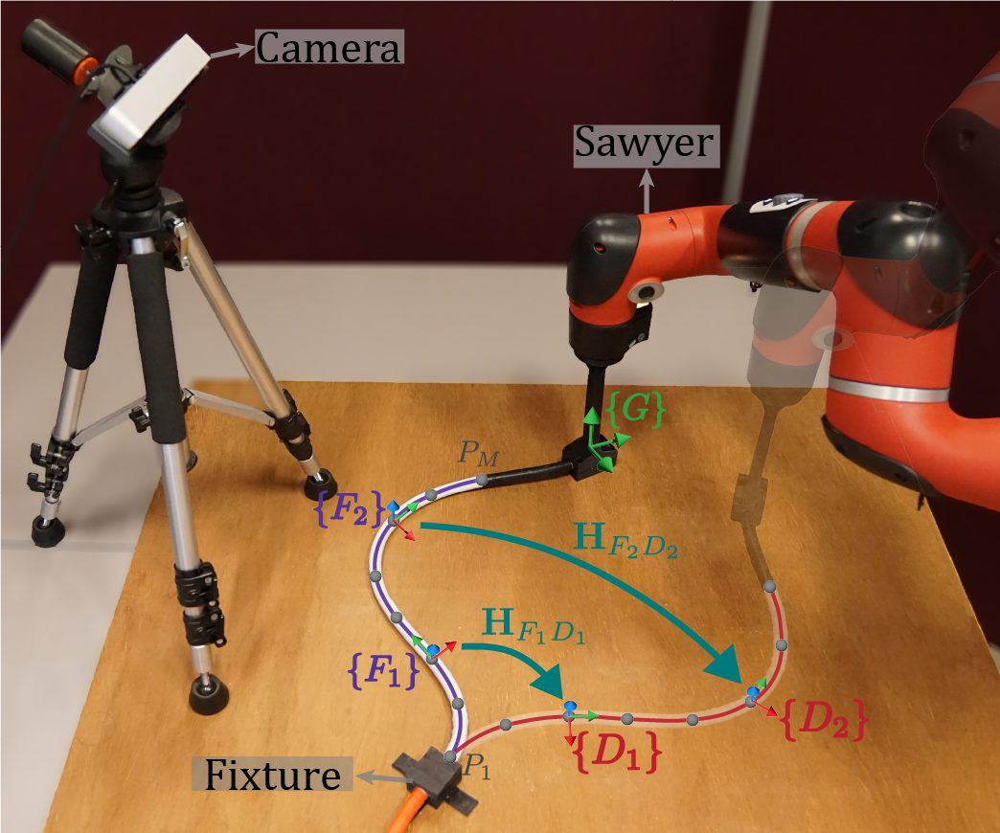

Research and publications
The central theme in my research is the robotic manipulation of underactuated systems. This can be achieved through very different ways, though. I first explored how to use Jacobian-based methods and adapted them to the SE(3) formalism. Now, I am focusing on a different approach: computing the inverse dynamics via servo-constraints. Find below the related publications and conference contributions.
Topic 1 Current work
Control of underactuated multibody systems via the servo constraint approach
Feedback based, model free methods for deformable object manipulation are effective, but they often rely on assumptions such as quasi static motions. To go beyond them, I investigate a model based trajectory tracking approach in which cables are modeled as multibody systems. The idea is to combine a planner which first generates a desired trajectory (not the current research focus), then a tracking module computes the control inputs through inverse dynamics.
These systems are heavily underactuated, so standard methods like computed torque do not apply. The servo constraint approach is an alternative, but in its original form it requires as many inputs as outputs. With deformable objects, the shape is described by many more outputs than there are inputs. In addition, a planner relying on a simplified model may produce trajectories that are not physically feasible.
My objective is to adapt the servo constraint to project the tracking error onto a lower dimensional space, which leaves out the components that the system cannot physically correct. This gives valid inverse dynamics solutions for non square systems. The modified method is compared with optimal control on cable manipulation tasks. I am currently writing a journal article on that topic.
Feasible
nu = 2 = nz
(square)
Fully actuated
- ID
- 0.08 s
- OC
- 38.7 s
Feasible
nu = 3 > nz = 2
(underconstrained)
Fully actuated
- ID
- 0.1 s
- OC
- 80.1 s
Unfeasible (incompatibility)
nu = 3 < nz = 4
(overconstrained)
Fully actuated
- ID
- 0.12 s
- OC
- 69 s
Unfeasible (control authority)
nu = 1 < nz = 2
(overconstrained, non collocated)
Underactuated
- ID
- 0.08 s
- OC
- 32.5 s
Related publications
-
Adapting the servo-constraints model inversion method for robotic cable manipulation
8th International Conference on Multibody System Dynamics (IMSD 2026), Seville, Spain, June 2026
Topic 2
Jacobian-based shape servoing of deformable objects
Deformable objects such as cables and thin shells can, in theory, take an infinite number of configurations. Shape servoing uses sensor feedback to make a robot bring such an object to a desired shape, and the way shapes and deformations are represented is crucial.
I developed an SE(3) based servoing framework (SE3BS). Features along the object are described by frames, so that errors capture both the pose of the object in space and its intrinsic shape. Deformations are expressed in local frames through the se(3) Lie algebra, which gives the deformation model useful invariance properties, and the orientations of the frames enter the feedback loop. The approach is demonstrated with a standard Jacobian-based control law, whose stability is analyzed with Lyapunov theory.
Compared with classical position based methods, simulations show improved performance and a reduced sensitivity to the choice of shape features. These findings are validated on a real robotic platform, and simulations illustrate the extension to dual arm manipulation of cables and shells in 3D.

Related publications
-
SE(3)-based representation of object deformations for robotic shape servoing: Formulation and assessment
Robotics and Autonomous Systems, vol. 200, 105403
-
SE(3)-based shape and deformation representations for adaptive control of deformable objects
2nd International Conference on Highly Flexible Slender Structures (HFSS 2025), Book of Extended Abstracts, p. 164, Kaiserslautern, Germany, September 2025
-
An SE(3)-based formulation of the shape servoing problem
2nd Workshop on Representing and Manipulating Deformable Objects, IEEE International Conference on Robotics and Automation (ICRA 2022), Philadelphia, PA, USA, May 2022